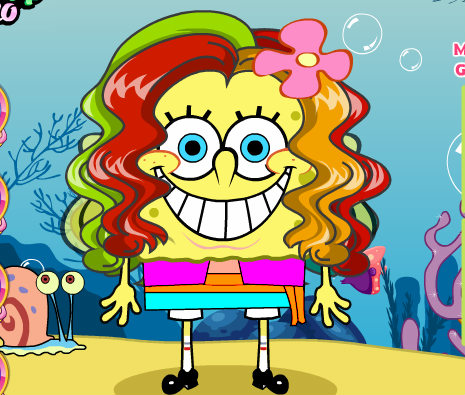
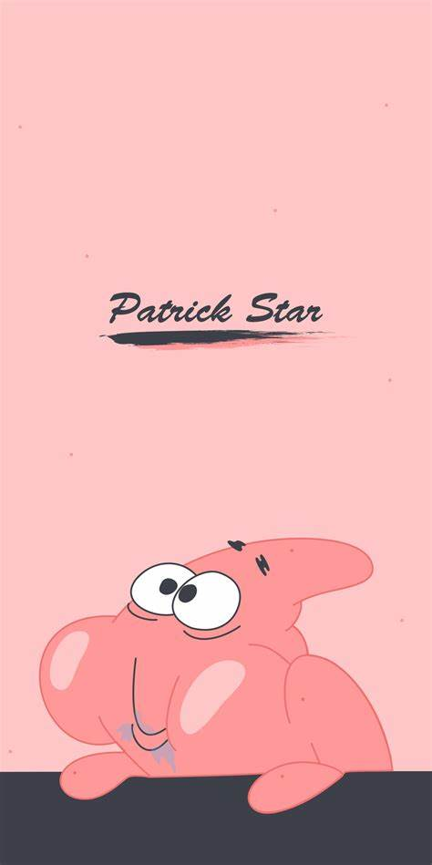

作品简介 :
《海绵宝宝》 故事围绕着生活在太平洋海底的比奇堡展开。海绵宝宝，一块黄色的方形海绵，拥有着无尽的乐观与热情。 他在蟹堡王餐厅担任厨师，对制作美味的蟹黄堡充满了执着。海绵宝宝的好友派大星，是一个天真无邪、头脑简单的粉色海星 ，他们一起度过了许多欢乐的时光。蟹老板则是一个爱财如命的红色螃蟹，经营着蟹堡王餐厅。还有自恋又傲娇的章鱼哥 ，虽然常常对海绵宝宝和派大星感到厌烦，但在关键时刻也会展现出善良的一面。
这部动画以其幽默诙谐的剧情、夸张的动画表现和独特的角色形象而著称。每一集都充满了 意想不到的情节和笑料，让观众在捧腹大笑的同时，也能感受到友情、善良和乐观的力量。无论 是海绵宝宝和派大星的无厘头冒险，还是蟹老板与章鱼哥的日常互动，都充满了趣味和温暖。《 海绵宝宝》不仅仅是一部儿童动画，它也能让成年人在忙碌的生活中找到片刻的轻松与欢乐，是一部跨越年龄界限的经典之作。
 